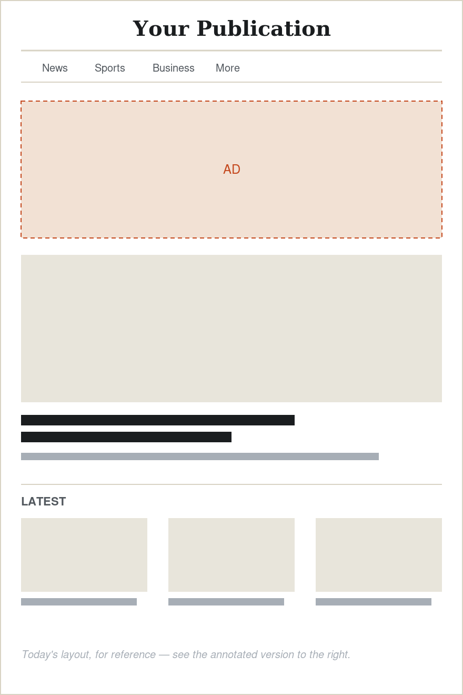
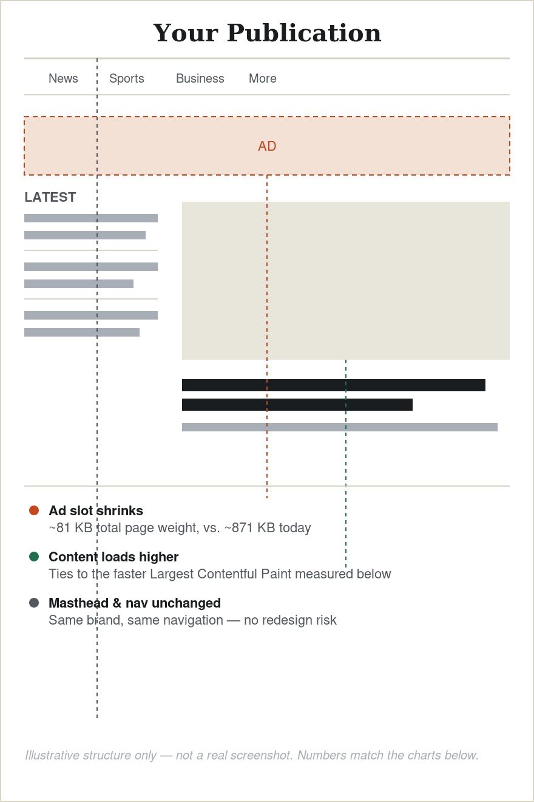
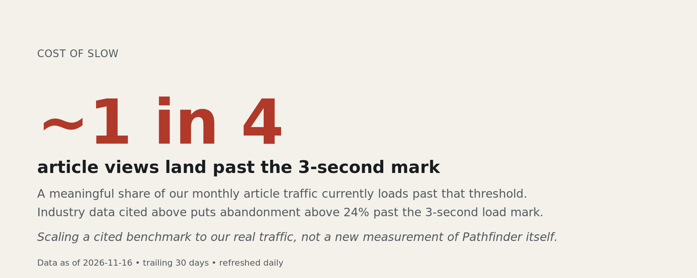
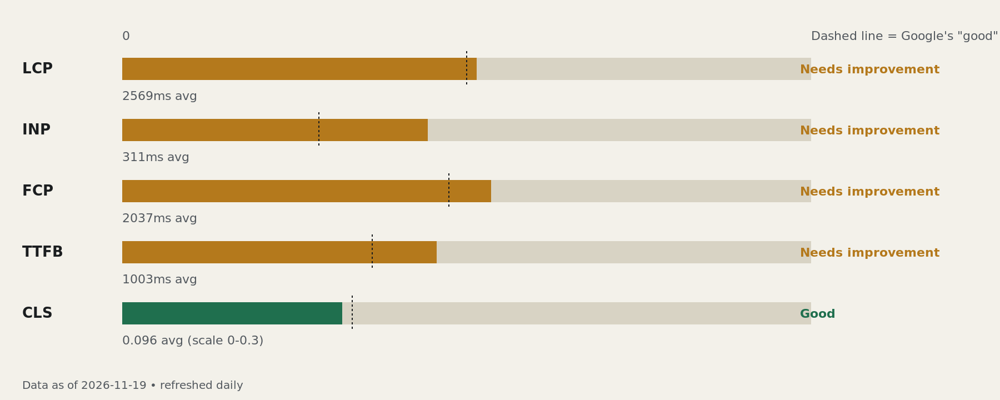
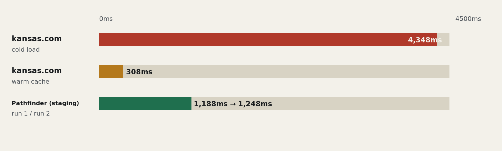
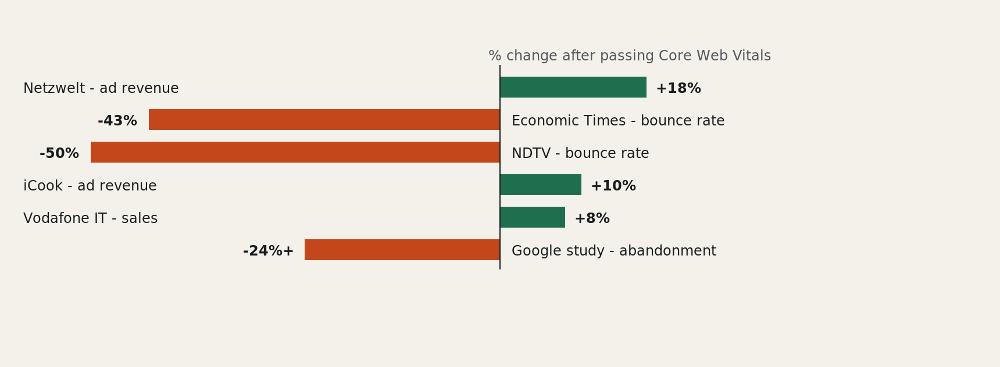

We're not claiming the win yet. Here's the baseline, the build, and the industry pattern the case rests on.
At a glance, almost nothing changed: same masthead, same nav, same recognizable layout. These are illustrative wireframes, not real screenshots — structure only, no real headlines, photos, or article content, drawn directly from what the actual pages look like today.


What moved isn't the brand, it's the structure underneath: a leaner ad slot, content that loads higher on the page, and the performance numbers below to back it up.
Slow pages cost publishers in three places at once: ad revenue, search discoverability, and the Core Web Vitals (Google's page-speed quality signals) that increasingly influence both. These aren't independent problems — they share a root cause, which is why a single rebuild can move all three.

Baseline Core Web Vitals, pulled from our internal performance analytics: LCP (Largest Contentful Paint), INP (Interaction to Next Paint), FCP (First Contentful Paint), TTFB (Time to First Byte), and CLS (Cumulative Layout Shift) — each measured against Google's published thresholds. Several of our production metrics sit in the "Needs improvement" range today, which is exactly why Pathfinder targets this layer first.

Pathfinder is Pod Iota's rebuild on our ad decisioning platform: a faster ad delivery and templating layer designed to cut script weight, reduce layout shift, and improve discoverability, without giving up ad revenue. The build is roughly 90% complete.
We measured a live staging simulation against production using the browser's own Performance API: navigation timing, paint timing, and resource timing. In that lab snapshot, First Contentful Paint came in faster on the staging build. This is a single lab snapshot, not a field dataset drawn from real visitors. It shows direction, not proof.

Validation is roughly 90% complete against our readiness checklist: 2 of 5 items done, 3 in progress, and nothing currently blocked. We're not waiting on belief, we're waiting on the remaining checks.
Publishers who have made comparable ad-tech and speed investments have seen real gains, from case studies at Netzwelt, Economic Times, NDTV, iCook, and Vodafone to Google's own research linking page speed to revenue. The pattern points one direction. We're not claiming those exact numbers for Pathfinder yet, but the direction is why this investment makes sense.

0%
ad revenue
Netzwelt, after passing Core Web Vitals thresholds.
One of several publishers in our review that saw real gains post-launch.
We are not claiming this result for Pathfinder yet — the pattern is the case for testing it.
We are not claiming Pathfinder has launched, and we are not claiming production before-and-after numbers yet. What we have is a measured production baseline, a build that's about 90% done, a real lab comparison between staging and production, and a documented pattern from publishers who've made similar bets.